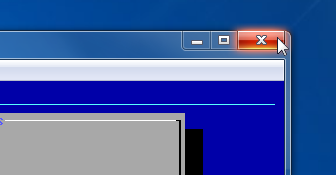

Volgende files zijn geleverd met het BDO Scoresysteem:
Virtuele Server Dit is de eigenlijke applicatie.
code.zip De programmacode voor de applicatie.
Handleiding.pdf Deze handleiding.
VirtualBox-4.2.16.exe Installer voor de virtualisatiesoftware.
wachtwoorden.txt De standaard wachtwoorden voor de applicatie en server.
Installeer de virtualisatiesoftware VirtualBox op de computer waarop u de applicatie wilt gebruiken (bijvoorbeeld op de laptop van de beheerder, op de laptops van de juryleden is enkel een webbrowser nodig). De meest recente versie van de software kan worden gedownload van https://www.virtualbox.org/.
Kopieer de map Virtuele Server naar de computer waarop u de applicatie wilt gebruiken.
Dubbelklik op het item BDO Server.vbox in de map Virtuele Server en wacht tot de server volledig is opgestart. Deze map moet zich op de computer bevinden, niet op de CD. U ziet volgend scherm:
Om verbinding te maken met de server en zo de applicatie te gebruiken surft u met uw browser naar http://scoresysteem of https://scoresysteem.
Bij het https adres kan uw verbinding niet worden afgeluisterd, het zou wel kunnen dat uw browser een waarschuwing geeft
maar deze kan veilig worden genegeerd door te klikken op Proceed anyway.
Indien u op deze manier geen verbinding zou kunnen maken surft u naar het adres dat in het serverscherm wordt vermeld achter Web. Ook hier is er een http en https versie beschikbaar.

Om de server na gebruik weer af te sluiten navigeert u met het toetsenbord naar Advanced Menu en dan Shutdown.
Of klikt u op het rode kruis rechtboven in het venster en kiest u voor De machine uitzetten.
